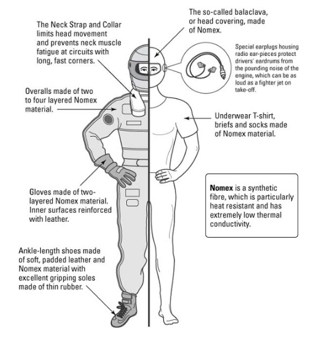
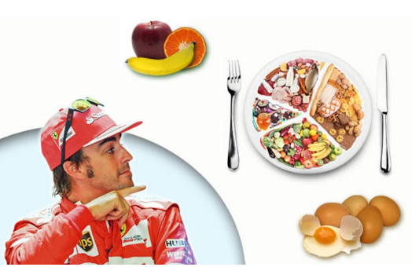

One of them is undoubtedly the diet that must meet certain characteristics that keep them healthy and fit, because despite the fact that it is a sport where the arduous physical preparation is not so evident, the preparation of the pilots entails something more than the technical preparation, because it does require a certain physical demand, where the pilot's body mass must remain lower than that of any other athlete, within healthy parameters, of course. The work on the track is routine, so the times that the pilot has to take his food are limited to very short spaces between his different commitments. However, sometimes they race in very hot climates and that makes the pilot feel in front of a very hot power source (engine) and with all the equipment and uniform, the pilot loses 2 to 3 kilograms of body mass during a Grand Prix, this is equivalent to 2 or 3 liters of fluids, of which 150% must be replaced to rehydrate properly.
In addition, certain nutrients such as boron in raisins help improve cognitive functions such as decision making and concentration. These are essential for drivers during the race. In addition, the location ensures that it is important for the pilot to eat a variety of meals, otherwise it will be increasingly difficult for the pilot to eat well in the long run.